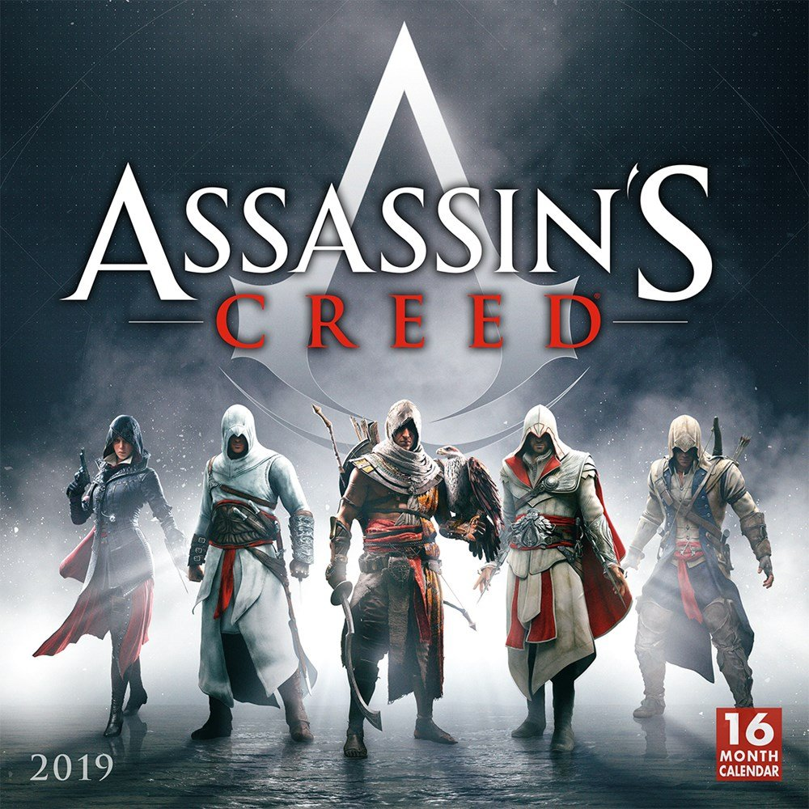

Assassin’s Creed became the poster-child of open-world games when it first graced our screens in the noughties. However, by the time Syndicate – the ninth core game in the series – rolled around, players had started to tire of annual Assassin’s Creed games. That’s when Ubisoft took a break and came back with Origins – the best entry in the action-adventure game franchise. Sorry, Ezio fans.
Generally speaking, Origins doesn’t deviate from the Assassin’s Creed formula much, everything in it is just a lot more satisfying. Combat has been revamped completely, with a more RPG-like upgrade system and a wider variety of tougher enemies. There’s no more chain-kills or dodge-attacks to take you through whole crowds of enemies here, and you can’t even rely on the previously insta-kill hidden blade anymore.
The game’s recreation of Ancient Egypt is gorgeous and full of challenges, relics, and puzzles to discover – and it isn’t the usual Ubisoft open world packed with little icons to hunt down, either. There are fun points of interest all over the map, from tombs you can raid to intriguing side missions. Plus, the revenge tale of main character Bayek is one of the best in the series.

download
Darksiders II is an action role-playing[3][4] hack and slash action-adventure video game developed by Vigil Games and published by THQ. It is the sequel to Darksiders and was released in August 2012 for Microsoft Windows, PlayStation 3, Xbox 360[5] and as a launch title for Wii U upon the console's Australian, European, and North American release in November 2012. The story follows the efforts of player character Death to clear the name of his brother, War, who stands accused of wiping out humanity. A remastered version, titled Darksiders II: Deathinitive Edition, was published by Nordic Games for the PlayStation 4, Xbox One and Microsoft Windows in 2015, and ported to the Nintendo Switch in 2019. A parallel sequel, Darksiders III, was released on November 27, 2018.Players take control of Death, one of the Four Horsemen of the Apocalypse. The core gameplay is an action role-playing[3][4] hack and slash style. The game makes frequent use of interactive puzzle elements, requiring the player to think their way through a series of levers, doors, elevators, portals, etc. in order to traverse areas and reach objectives. Maps are vast and each contain open world regions that can be explored freely on foot or by horse, along with numerous dungeons where quest objectives are generally carried out. There are main and side quests, with main and side boss fights. Worlds can be traversed via fast travel, whereby the player can teleport to certain map points instantly. While inside a dungeon, the player is allowed to fast travel back to the overworld while saving their dungeon location for continuation later without losing progress. Death is aided by Despair, a horse that is available for use in open areas of the overworld for faster travel, and Dust, a raven that guides him to his objectives. Death's primary weapons are two scythes, one wielded in each hand. Secondary weapons include melee weapons like hammers, axes, and maces as "slow" options; "fast" options are generally gauntlet-style weapons that provide the player with claws and other bladed arm extensions, at the expense of less range and power than the slow weapons.

download